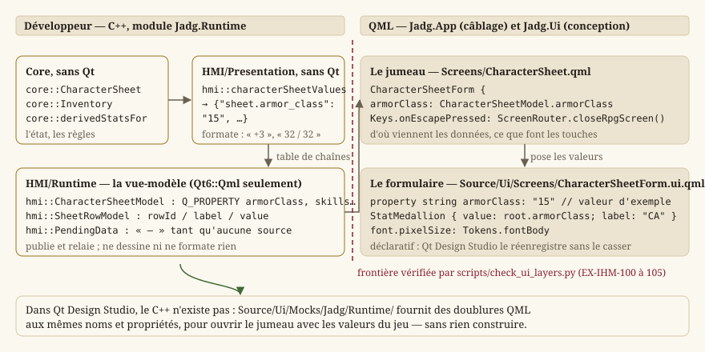
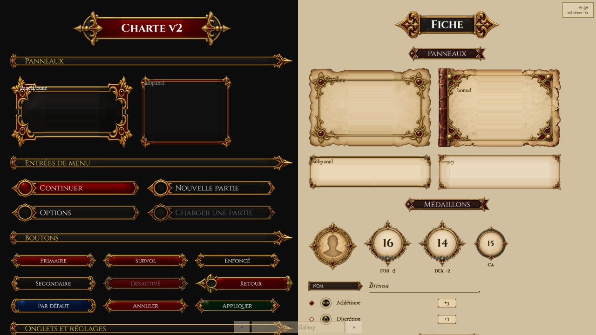
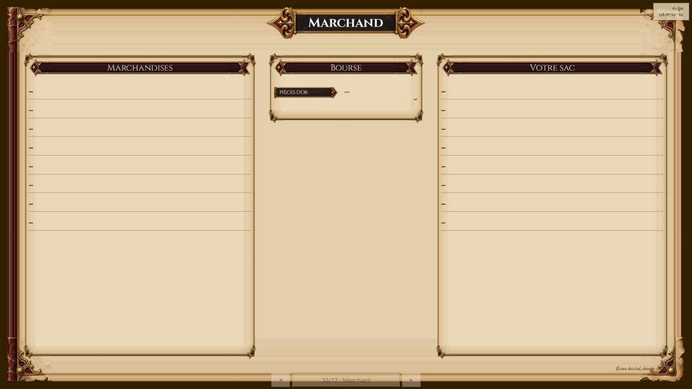
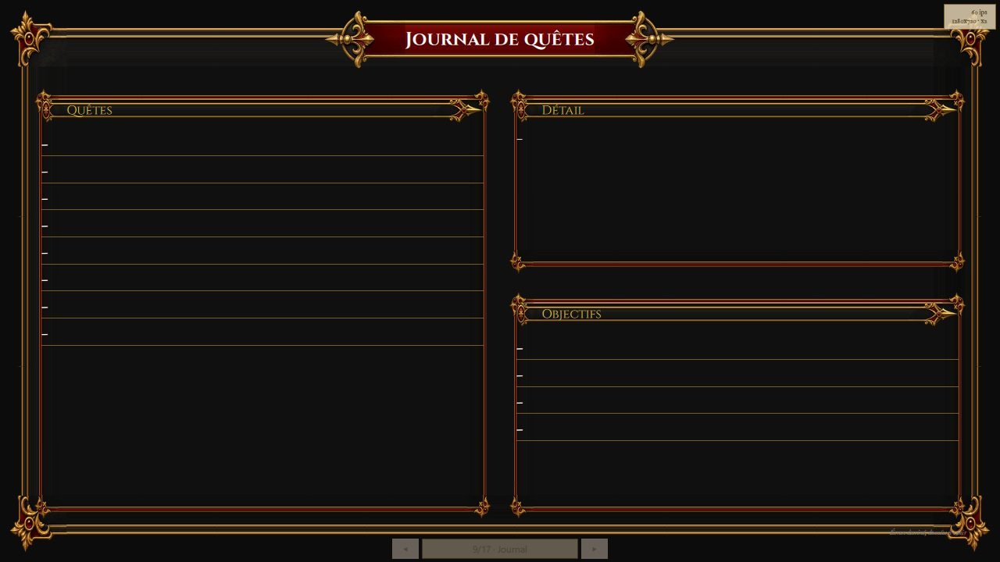
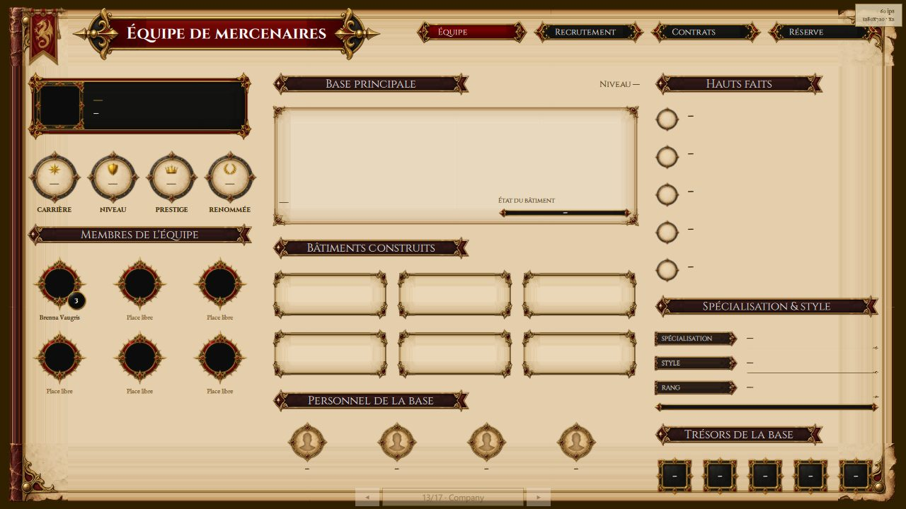
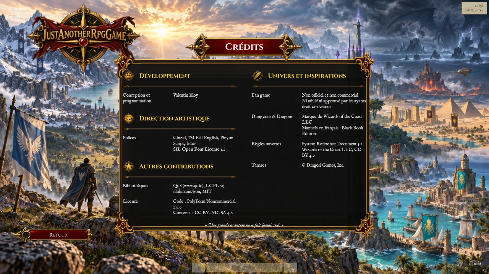

IHM Qt — deux applications, deux technologies
Le jeu est une application Qt Quick ; l'éditeur de niveaux est en Qt Widgets, dans son propre binaire (LOT-86, LOT-EDITOR-01). Le rendu de scène passe par QRhi — Direct3D 11 par défaut sous Windows — dans le jeu ; l'éditeur peint par QPainter. L'apparence des écrans du jeu et le mode d'emploi de la conception sont en Concevoir les écrans dans Qt Design Studio, que cette page laisse de côté.
Périmètre de la page : Source/HMI/Runtime/ (les vues-modèles), Source/HMI/Presentation/ (la logique de présentation pure), Source/HMI/Platform/, Source/HMI/Localization/, Source/HMI/HmiLog.h. La navigation (ScreenFlow.h, RpgScreens.h, ScreenRouter.h) est détaillée en Écrans, navigation et boucle de jeu ; les surfaces de rendu (WorldViewportItem, ArenaViewportItem, GameViewportItem, AssetGalleryItem, CityBlockImageProvider) en Rendu 2D ; GamepadNavigator en Entrées et actions logiques.
Pourquoi deux binaires
L'éditeur et le jeu vivaient dans une seule application, et c'est de là que venaient les 2 472 lignes de MainWindow.cpp : une seule technologie d'IHM devait servir deux besoins opposés.
- L'éditeur est un outil d'auteur : docks détachables, arbres, disposition persistée (
EX-IHM-011). Qt Widgets y est le bon outil, et QML n'y apporterait rien. Depuis leLOT-EDITOR-01, c'est un module à part (Source/Editor), outil interne : style Fusion, textes anglais écrits dans le code, widgets construits en code. - Le jeu est l'inverse : des écrans dessinés pour 1920 × 1080 et rapportés à la fenêtre, dont l'apparence doit pouvoir changer sans compiler (
EX-IHM-100).
| Cible | Technologie | Point d'entrée |
|---|---|---|
JustAnotherRpgGame | Qt Quick, QGuiApplication | Source/App/Game/Main.cpp |
LevelEditor | Qt Widgets, QApplication | Source/App/Editor/Main.cpp |
Elles partagent Core, HMI/Graphics, HMI/Game, HMI/Input, HMI/Audio, HMI/Platform et l'amorçage (App/Common/Bootstrap) — tout ce qui n'est pas de la présentation. Elles ne partagent aucune technologie d'IHM, et le jeu ne lie pas Qt6::Widgets (EX-IHM-102). Ce n'est pas une convention : un widget qui y réapparaîtrait ferait échouer l'édition de liens.
Les trois couches du jeu
Core règles et état, SANS Qt
↑
HMI/Presentation logique de présentation pure (table de transitions, valeurs formatées)
HMI/Runtime vues-modèles exposées au QML : ce que le jeu SAIT DIRE (module Jadg.Runtime)
↑ Qt6::Qml seulement — jamais Quick ni Widgets (EX-IHM-101)
Source/Ui (QML) ce que ça DONNE À VOIR (module Jadg.Ui, sans C++)
Source/App/Game/Qml le câblage entre les deux (module Jadg.App)HMI/Runtime transforme l'état du jeu en propriétés et en modèles de liste, et ne dessine rien. Un écran lui demande ce que le jeu sait dire, jamais comment le montrer. Un seul en-tête d'IHM qui y entrerait signalerait que la logique de vue a commencé à redescendre dans la couche de données — et c'est ainsi que MainWindow.cpp s'était épaissi.
scripts/checks/check_ui_layers.py vérifie les six règles de cette séparation à chaque Pull Request. Elles sont écrites en EX-IHM-100 à EX-IHM-105. Une règle qui n'est pas vérifiée n'est pas une règle : c'est une intention — le dépôt l'a appris deux fois, avec un défaut de taille d'écran corrigé trois fois et une palette écrite deux fois.
{kind=link}

Les trois modules QML
Depuis le LOT-87, le jeu est fait de trois modules QML, et chacun est déclaré dans le répertoire de ses fichiers :
| Module | Répertoire, et son CMakeLists.txt | Contenu | Cible |
|---|---|---|---|
Jadg.Ui | Source/Ui | formulaires, contrôles, jetons, galerie — QML pur | bibliothèque statique JadgUi, designersupported |
Jadg.Runtime | Source/HMI/Runtime | les types C++ exposés au QML (QML_ELEMENT) | bibliothèque statique JadgRuntime |
Jadg.App | Source/App (fichiers sous Game/Qml/) | la fenêtre, la pile d'écrans, les jumeaux | l'exécutable JustAnotherRpgGame |
Pourquoi trois, et pourquoi là. Qt Design Studio ne charge aucun plugin C++ du projet : un module qui mêle formulaires et types C++ est résolvable par le jeu et pas par l'atelier. Jadg.Ui est donc pur, et n'importe jamais Jadg.Runtime — seuls les jumeaux le font, et l'atelier le remplace par les doublures de Source/Ui/Mocks/. Quant au « là » : qt_add_qml_module calcule le chemin de ressource de chaque fichier relativement au CMakeLists.txt qui l'appelle. Un module déclaré depuis un autre répertoire oblige à réécrire ces chemins un par un, par des alias, et c'est cette plomberie qui a coûté 125 commits à une branche abandonnée. Aucun alias de ressource dans ce dépôt, et scripts/checks/check_qml_designer_compat.py le vérifie.
La découverte de Qt et QT_VERSION_MINIMUM vivent dans Source/CMakeLists.txt : les cibles importées d'un find_package ne sont visibles que sous le répertoire qui l'a appelé, et trois répertoires frères en dépendent.
Les deux bibliothèques statiques sont liées avec leurs plugins (JadgUiplugin, JadgRuntimeplugin) : le qmldir embarqué de chaque module les désigne (optional plugin, linktarget), et c'est le plugin lié qui enregistre les types quand l'engine rencontre l'import. Aucune macro d'import dans le C++.
Quatre pièges, tous silencieux, tous consignés dans les CMake :
- un singleton doit être déclaré (
QT_QML_SINGLETON_TYPE) : CMake ne déduit paspragma Singleton. Non déclaré, le type se charge quand même — mais chaqueimporten construit une instance neuve, et le facteur d'agrandissement posé par la fenêtre n'est vu par aucun écran ; - le fichier d'enregistrement des types est engendré et inclut les en-têtes par nom de base, dans un
__has_includequi échoue sans bruit : le répertoire doit être dans les chemins d'inclusion ; windeployqtsans--qmldirn'embarque aucun module QML, et le jeu se lance alors sans interface, sans message — il en faut deux, un par répertoire QML ;target_link_librariesdoit précéderqt_add_qml_modulesur l'exécutable : la cibleall_qmllintcompose ses chemins d'import depuis les modules déjà liés à cet instant. Après, qmllint ne résout niJadg.UiniJadg.Runtimeet signale chaque écran en erreur.
{kind=link}

--screen=Gallery) : panneaux, entrées de menu et boutons sur fond sombre à gauche, panneaux et médaillons sur parchemin à droite, à 1280 × 720La galerie est la preuve que les briques se résolvent au jeu comme à l'atelier : c'est le fichier que Qt Design Studio ouvre en premier (DesignStudio/Main.ui.qml), posé tel quel dans la pile d'écrans, sans jumeau.
Éditer un écran sans rien reconstruire
La ressource imposerait une reconstruction à chaque retouche. Un second qmldir est donc engendré sous Source/Ui/Jadg/Ui/, dont les chemins désignent les sources ; JADG_QML_FROM_SOURCE=1 le place en tête des chemins d'import.
Il est engendré depuis la même liste que la ressource : ajouter un écran ne crée pas un second endroit à synchroniser. C'est aussi lui qui rend Source/Ui importable tel quel, donc ouvrable par Qt Design Studio. Seul Jadg.Ui se relit ainsi : Jadg.App et Jadg.Runtime restent ceux du binaire, et c'est voulu — ce qu'un artiste change ne demande jamais de les toucher.
Ouvrir les écrans pour les dessiner
Ce n'est pas Qt Designer. Qt Designer dessine des widgets et n'ouvre que des .ui (XML) — le dépôt n'en a plus aucun depuis le LOT-EDITOR-01. Les écrans du jeu sont du Qt Quick : ils s'ouvrent dans Qt Design Studio, qui est un programme distinct.
D:/Qt/Tools/QtDesignStudio/bin/qtdesignstudio.exe Source/Ui/JadgUi.qmlprojectCinq règles, dont plusieurs se paient par un mode Design vide plutôt que par un message :
- ouvrir le
.qmlproject, jamais le fichier seul. Un.ui.qmlouvert par « File > Open File » n'a pas de chemin d'import :import Jadg.Uiéchoue, et la vue 2D reste blanche ; - le projet doit avoir été configuré une fois par CMake. Le
qmldirdeSource/Ui/Jadg/Ui/est engendré et ignoré par git : sur un dépôt fraîchement cloné il n'existe pas encore, et aucun type du module ne se résout.scripts/build.ps1suffit à le poser ; - le mode Design reste grisé si
qt6Project: truemanque du.qmlproject. Sans ce booléen, Design Studio suppose un projet Qt 5, ne trouve aucun kit Qt 5, et désactive le mode — sans message ni trace dans le journal ; - on dessine le
*Form.ui.qml, jamais son jumeau. Un.ui.qmlest déclaratif, donc réversible : Design Studio le réenregistre sans le casser. Le jumeau.qmlcontient du JavaScript ; Design Studio l'ouvre — grâce aux doublures deSource/Ui/Mocks/— pour le voir avec les valeurs du jeu, mais ne l'édite qu'en texte, et c'est voulu ; - la bibliothèque de composants reste « (vide) » pour les dossiers du projet, avec ou sans le mot
designersupportedque leqmldirengendré porte. Les briques se posent depuis la galerieDesignStudio/Main.ui.qmlou par le code ; le point reste à instruire.
Aucune version de Qt n'est écrite dans le .qmlproject, et c'est délibéré. Le projet se construit avec la version épinglée par QT_VERSION_MINIMUM (Source/CMakeLists.txt), que scripts/ci/check_qt_version_pin.py tient identique en CMake et en CI. Design Studio, lui, dessine toujours avec le Qt qu'il embarque (6.8.7 sur le poste de référence, qmlpuppet-4.8.3.exe), quel que soit le Qt installé : un numéro de plus dans le fichier de conception ne commanderait ni l'un ni l'autre. Tous les imports du module étant sans version, le choix ne se pose pas.
Les types C++ de Jadg.Runtime sont invisibles à Design Studio ; Source/Ui/Mocks/Jadg/Runtime/ en porte des doublures QML aux mêmes noms et propriétés, que le .qmlproject place dans ses importPaths. Les formulaires de Source/Ui/Screens/ et leurs jumeaux de Source/App/Game/Qml/Screens/ se résolvent ainsi dans l'atelier. Seuls Main.qml et ScreenStack.qml restent irrésolus, parce qu'ils importent Jadg.App lui-même : ce sont des fichiers de câblage, et rien ne s'y dessine. check_qml_designer_compat.py tient les doublures alignées sur le C++ : chaque Q_PROPERTY et chaque Q_INVOKABLE doit y avoir son pendant.
Les vues-modèles : ce que le jeu sait dire
Toutes sont des QObject déclarés QML_ELEMENT (ou QML_SINGLETON), et suivent la même discipline : elles publient des propriétés et des modèles, elles relaient les gestes à Core ou à une fonction pure de HMI/Presentation, et elles ne formatent ni ne dessinent rien. Un signal changed unique par vue-modèle plutôt qu'un par propriété : l'état est recalculé d'un bloc, et prétendre le contraire obligerait à comparer quatorze champs pour n'en notifier que ceux qui bougent.
hmi::OptionsModel — persister et prévenir
Singleton. EX-IHM-083 gouverne la classe : tout réglage exposé doit atteindre le moteur. Elle ne fait donc que deux choses : persister (QSettings) et prévenir ; c'est Main.cpp qui branche chaque signal sur ce qu'il atteint (voir plus bas).
- Propriétés en écriture :
fullscreen,vsync,diagnostics,volume(entier, en pour cent),language(un code,frouen) — chacune avec son signal…Changed. hmi::OptionsModel::languages/languageNames— les codes, et les noms dans leur propre langue (« English » ne se traduit pas : c'est ce qui permet d'en sortir). Constantes : une langue s'ajoute avec son catalogue, donc par une construction.hmi::OptionsModel::defaults— les valeurs d'usine, une seule table lue par le bouton « Par défaut » et par le constructeur : recopiées en QML, elles auraient divergé au premier défaut changé ici.hmi::OptionsModel::logsAvailable—falseen Release, où aucun puits mémoire ne collecte les journaux de session ; le bouton se désactive plutôt que d'échouer une fois cliqué.hmi::OptionsModel::saveLogs()— écrit les journaux de la session (core::MemoryLogSink) dans un fichier horodaté à côté de l'exécutable et rend un message destiné à l'écran : le chemin écrit, ou la raison de l'échec, jamais une chaîne vide. C'est ce qui permet à un joueur de joindre un fichier exploitable à un rapport de défaut sans terminal (EX-NFR-040).hmi::OptionsModel::setSessionLog(sink)— appelé par l'application au démarrage : la présentation ne va pas chercher le puits elle-même, elle ne sait pas qu'il existe.
« Immédiatement » s'entend à l'écriture d'une propriété. L'écran des options de la charte v2 n'écrit qu'au bouton « Appliquer » : il tient ses valeurs en attente, et « Annuler » les abandonne sans que cette classe en ait rien su.

hmi::PendingData — l'ancre de ce qui n'a pas encore de source
Singleton. Plusieurs écrans du RPG — journal, marchand, ATH de combat, l'essentiel de l'équipe de mercenaires — n'ont aujourd'hui aucune donnée : les lots qui les produiront n'existent pas encore. Leur mise en page, elle, est décidée. Chacun de leurs champs porte donc une clé d'attribution nommée qui aboutit ici ; le jour où le lot fonctionnel arrive, il remplace PendingData par sa vraie vue-modèle dans le jumeau, et le formulaire ne bouge pas.
hmi::PendingData::value(key)— le tiret cadratin, quelle que soit la clé. La clé n'est pas ignorée pour autant : c'est elle quescripts/i18n/list_pending_bindings.pyrelève dans le QML — un inventaire dérivé du code, donc toujours exact.hmi::PendingData::image(key)— une URL vide. Distincte devalue, et ce n'est pas un détail : affecter un tiret à la source d'une image fait chercher un fichier nommé « — ».hmi::PendingData::rows(key, count)— un modèle decountlignes vides, mis en cache par clé : sans cela, chaque réévaluation d'une liaison construirait un modèle neuf, et la position de défilement sauterait à chaque image.
Pourquoi un tiret et non de fausses données : un écran rempli de valeurs plausibles se prend pour un écran fini, passe les relectures, et un jour quelqu'un s'étonne que le marchand vende toujours les mêmes trois objets.
{kind=link}

Le marchand n'est pas seul dans ce cas, et les deux autres montrent bien ce que le tiret permet : juger une disposition avant d'avoir la donnée qui la remplira.
{kind=link}

Le journal se juge déjà sur une question de conception que nulle donnée ne changera : la liste des quêtes occupe une colonne entière, et le détail se partage en deux avec les objectifs. C'est vérifiable aujourd'hui, et ce serait bien plus coûteux à corriger une fois les quêtes écrites (LOT-116).
{kind=link}

L'équipe de mercenaires est le cas extrême : presque tout y est en attente, et l'écran reste pourtant utile — il montre que six places de membres tiennent sans que la disposition se déforme, alors que la décision de cadrage n'en promettait que quatre.
hmi::SheetRowModel — les parties répétitives
QAbstractListModel de lignes hmi::SheetRow (id, label, value), rôles rowId, label, value. Les six caractéristiques, les six jets de sauvegarde et les dix-huit compétences sont des répétitions : la conception veut en décrire une et laisser le nombre à la donnée. hmi::SheetRowModel::setRows(rows) remplace tout d'un bloc — la liste est recalculée à chaque changement de fiche, jamais modifiée par morceaux. Le modèle ne formate rien : la valeur arrive déjà mise en forme par la couche pure.
Volontairement pas déclaré type QML : un modèle ne s'instancie jamais depuis le QML, il est fourni par la vue-modèle et consommé par son type de base QAbstractItemModel*. L'exposer aurait obligé le registrar à enregistrer aussi sa classe de base, qui appartient à un autre module.
hmi::ruleLabel — le vocabulaire des règles
Source/HMI/Runtime/RuleLabels.h. La chrome des écrans (« Nouvelle partie ») s'écrit en français dans le QML et se traduit par qsTr. Les termes de règle — caractéristique, emplacement d'équipement, condition — ne le peuvent pas : leur clé est calculée (rpg.ability. + l'identifiant que le modèle rend), et qsTr exige une chaîne littérale.
hmi::ruleLabel(key, language)— le libellé traduit ; la clé elle-même si le catalogue ne la porte pas, jamais une chaîne vide, qui donnerait un écran troué sans dire pourquoi.hmi::activeLanguage()— la langue de l'IHM telle que les réglages la persistent (frpar défaut).
Ces termes sont un lexique : Source/Elements/Localization/rpg.glossary.csv garantit une seule traduction par terme dans tout le jeu, et scripts/checks/check_glossary.py le vérifie.
hmi::CharacterSheetModel et hmi::InventoryModel — le personnage
CharacterSheetModel publie la fiche : name, species, background, classAndLevel, level, experience, hitPoints, hitPointsMax, hitDice, armorClass, initiative, speed, proficiencyBonus, passivePerception, trois modèles (abilities, savingThrows, skills) et la table complète values (sheet.ability.strength.score, …modifier…) que la fiche de la charte v2 pose hors des listes. Ces propriétés nommées ne sont pas une seconde source : une façade lisible dans le panneau des propriétés de Design Studio, sur la table que hmi::characterSheetValues produit. hmi::CharacterSheetModel::loadDemonstrationCharacter() charge le personnage de démonstration — échafaudage écrit comme tel : il n'existe encore ni groupe ni sauvegarde d'où tirer un personnage réel. Une donnée manquante n'interrompt rien (EX-CNT-010) : la fiche s'affiche partielle, avec ses tirets.
InventoryModel publie ce que le personnage porte et agit (LOT-87) : equipmentSlots (les seize emplacements), purse, gold, carried, capacity, loadRatio, backpack, equipped, la grille filtrée cells selon filter (hmi::ItemFamily), la sélection (selectedItem, selectedSlot, selection : nom, genre, dégâts, armure, poids, texte, et canEquip, canUnequip, canDrop) et les quatre statistiques dérivées de la maquette. Les gestes : hmi::InventoryModel::selectItem, selectSlot, equipSelected, unequipSelected, dropSelected, sortBackpack. Aucune statistique n'est stockée ici (LOT-14) : chaque geste modifie l'inventaire gardé, puis tout est recalculé depuis lui par core::derivedStatsFor. Rien n'est ajouté ni retranché à une valeur publiée.

Les deux vues-modèles décrivent le même personnage : Source/HMI/Runtime/DemonstrationCharacter.h le charge une fois. hmi::DemonstrationState tient la fiche, l'inventaire et les huit catalogues (hmi::DemonstrationState::lookup() en donne la vue core::ItemLookup, qui pointe dans l'état : ne pas copier ensuite) ; hmi::loadDemonstrationState() le lit en journalisant chaque manque ; hmi::demonstrationValues(state) en tire les deux tables, statistiques recalculées ; hmi::loadDemonstrationValues() enchaîne les deux. Charger deux fois les catalogues aurait permis aux deux écrans de diverger — la classe d'armure de la fiche vient de ce que l'inventaire contient.
hmi::DialogueModel — une conversation
Tient un core::DialogueRunner et rien d'autre ne décide (LOT-15). Écrire dialogueId ouvre la conversation ; speakerName, attitude, line, checkOutcome (le jet que la dernière réponse a joué), replies (modèle : rowId, label, value = le jet annoncé), finished, status. hmi::DialogueModel::choose(rowId) donne une réponse, ou quitte si c'est la ligne hmi::DIALOGUE_LEAVE_REPLY ; chooseAt(index) sert les touches 1 à 9 ; restart() rouvre depuis l'entrée, drapeaux conservés. Le signal hmi::DialogueModel::combatRequested(arenaId) dit qu'un PNJ envoie se battre (LOT-09) : le modèle n'ouvre rien, c'est l'écran qui décide et le routeur qui navigue.
Échafaudage nommé : sans partie ni sauvegarde (LOT-17), les drapeaux de monde de la conversation vivent le temps du processus, et l'interlocuteur est le personnage de démonstration.

hmi::WorldModel — la partie en cours
Singleton, et c'est le fond du sujet : la session d'exploration est la partie, pas un objet de l'écran de jeu (Écrans, navigation et boucle de jeu). Elle tient un hmi::WorldPlay et fait tourner son pas fixe (WorldModel::STEP_MILLISECONDS, 16 ms, sur un QTimer précis).
- Propriétés :
mapId,mapName,status,loaded,columns,rows,heroColumn/heroRow(coordonnées continues, ce que la caméra suit ; signalheroMoved),heroFigure,frozen,cityLocation(la fiche d'atlas de la ville, clé de son plan),districtId,visitedDistricts(LOT-96). hmi::WorldModel::startNewGame()— ouvre le jeu à la porte de départ de la ville (WorldModel::START_CITY, la Capitale) et oublie les quartiers visités ;hmi::WorldModel::enterMap(mapId, arrival)— entre sur une carte ;hmi::WorldModel::mapOfDistrict(id)— la carte d'un quartier.hmi::WorldModel::setMove(x, y)— la direction demandée, de longueur au plus 1, tenue jusqu'au prochain appel : l'état d'une touche enfoncée, pas un pas ;hmi::WorldModel::interact()— le prochain pas résoudra l'interaction.- Options de développement :
setStartOverride(--map=),setLevelDirectories(--levels=, à appeler avant la première entrée : la session est refaite),setStartCell(--at=),setStartFlags(--flags=). - Pour la surface de rendu :
hmi::WorldModel::snapshot()(des valeurs, sans pointeur),diamondRatio(),sceneRevision()(avance à chaque pas qui change ce qui se dessine — c'est ce qui épargne une recomposition par image). - Signaux :
changed,heroMoved,mapEntered(mapId),dialogueRequested(dialogueId),encounterRequested(encounterId),portalLocked(flag),portalBroken(mapId). Le modèle ne navigue jamais : il dit ce qu'il faut ouvrir, l'écran l'ouvre.
hmi::WorldMapModel et hmi::CityDistrictModel — l'écran « Carte »
WorldMapModel charge l'atlas du LOT-37 et les positions relevées sur les cartes de l'auteur (Maps/world-maps.json), puis les joint par hmi::joinWorldMaps ; chaque écart est journalisé plutôt que tu (LOT-94). hmi::WorldMapModel::load() ; worldImage ; regions (une table par région : repère, cadre du zoom, régime, faction, population, les sept grades, ses places et ses labels) ; placedCount ; hmi::WorldMapModel::city(placeId) — le plan d'une ville, ou une table vide ; hmi::WorldMapModel::regionIndex(regionId).

CityDistrictModel ajoute les deux niveaux sous la ville (LOT-96) : district(mapId) — le quartier et ses îlots (core::cityBlocksOf), centres en fractions de la carte pour les poser sur l'agrandissement du plan ; blockImage(mapId, blockId, figure, heroColumn, heroRow) — l'adresse que hmi::CityBlockImageProvider dessine à la demande, l'image d'un îlot n'étant pas un fichier ; blockAt(mapId, column, row) — l'îlot d'une case.
hmi::CreditsModel — une colonne de crédits
column (0 ou 1), language, sections (liste de tables : sectionId, title, iconKey, lines de role et names). Le jumeau en pose deux et lie language à OptionsModel : un changement de langue relit les titres. Le fichier est embarqué dans la ressource (:/jadg/credits/credits.json) : des attributions obligatoires ne dépendent pas d'un fichier posé à côté de l'exécutable, qu'un déploiement pourrait oublier.
{kind=link}

hmi::ArenaModel — le Colisée
La vue-modèle de l'arène tient une core::ArenaSession et les catalogues dont l'écran compose son affrontement ; elle ne décide rien du combat. Composition : roster, allies, enemies, marks, seed, enemyAi, et les gestes addAlly, addEnemy, removeAlly, removeEnemy, assignMark, launch, replay, backToSetup. Jeu : fighters, reachableCells, turnOrder, activeName, activeResources, journal, et le ciblage du LOT-24 (cursorColumn, cursorRow, pathCells, turnActions, preview, gestes tapCell, moveCursor, pointCursor, centerCursor, cycleTarget, selectAction, cycleAction, confirm, dodge, disengage, dash, endTurn, withdraw). Trois signaux et non un : changed pour tout ce que l'interface affiche, cursorChanged pour ce qui suit le curseur (un pas de curseur ne doit pas reconstruire le calque de la grille), combatSceneChanged pour la surface de rendu seule, émis aux seuls gestes qui mutent la grille. Le détail des règles est en Combat tactique.
La logique de présentation pure
Source/HMI/Presentation/ ne dépend pas de Qt : ce sont des fonctions et des structures que les vues-modèles appellent, et que les tests unitaires vérifient sans fenêtre (EX-NFR-010).
hmi::characterSheetValues(context)— traduit unecore::CharacterSheeten valeurs affichables, indexées par l'identifiant que l'ossature de l'écran déclare (hmi::RpgField::valueId). Lehmi::CharacterSheetContextporte la fiche, les catalogues et, s'il est présent,core::DerivedStats— qui remplace alors classe d'armure et vitesse de la fiche par celles de l'équipement porté. Un contexte incomplet rend une table vide, jamais des zéros. Le formatage (signe d'un modificateur,12 / 18) est ici, parce que c'est une règle d'affichage ; la traduction des noms reste au lexique.hmi::inventoryValues(context)— même patron pour l'inventaire (hmi::InventoryContext) ;hmi::splitPurse(copper, gold, silver, rest)— répartit une somme en cuivre (la seule unité du modèle,LOT-32) entre les trois médaillons de monnaie de la feuille.Source/HMI/Presentation/InventoryScreen.h— ce que l'écran d'inventaire de la charte v2 fait :hmi::ItemFamily(All,Equipment,Gear,Tools,Other, tirées des données et non de la maquette : un onglet qui ne trierait rien serait inopérant,EX-IHM-072) ;hmi::familyOf,hmi::backpackCells(les piles du sac que le filtre retient),hmi::itemSheet(hmi::ItemSheet: nom, genre, dégâts, armure, poids, texte) ;hmi::naturalSlot(l'emplacement où un objet s'équipe naturellement,std::nulloptpour une torche : on ne range pas une torche au cou) ;hmi::equipFromBackpack(ce que l'emplacement portait revient au sac : rien ne se perd dans un échange),hmi::unequipToBackpack,hmi::dropFromBackpack,hmi::sortBackpack(par nom, puis identifiant : un ordre stable).hmi::dialogueScreenValues(runner, text)— l'état d'uncore::DialogueRunnerenhmi::DialogueScreenValues: réplique en attente et ses réponses ; refus faute de langue commune (EX-RPG-042) avec la seule réponse « Quitter » ; fin (finished).textest unhmi::TextLookup, la fonction de traduction.hmi::skillLabelKey(skillId)— la clé de lexique d'une compétence (rpg.skill.animal_handlingpouranimal-handling).hmi::readCredits(json, language)— litcredits.jsonenhmi::CreditsResult: les sections (hmi::CreditSection,hmi::CreditLine) ou l'erreur, jamais les deux. Une section malformée fait échouer toute la lecture : une attribution qui disparaîtrait sans erreur est précisément ce qu'une licence interdit. Une langue absente d'un libellé retombe sur le français.hmi::readWorldMaps(json)— litworld-maps.jsonenhmi::WorldMaps(hmi::RegionMap,hmi::CityMap,hmi::MapDistrict, positionshmi::MapPointet cadreshmi::MapFrameen fractions de 0 à 1 ; une position hors de [0, 1] fait échouer toute la lecture en nommant l'entrée). Pourquoi un fichier à part de l'atlas : la chaîne d'extraction réécrit ses fichiers et effacerait un champ qu'elle n'a pas produit.hmi::joinWorldMaps(atlas, maps, mismatches)— joint les cartes à l'atlas enhmi::WorldMapViews(hmi::MapRegionView,hmi::MapCityView,hmi::MapPlaceView,hmi::MapCityPointView) et écrit chaque écart dansmismatches: une région qui manque en silence ne se corrige jamais.hmi::identityScaleFor,hmi::identityScaleForDisplay— le facteur d'agrandissement entier, expliqué en Système de design et architecture de l'information.hmi::resolveTransition,hmi::rpgScreens— en Écrans, navigation et boucle de jeu.
La surface de rendu
Le jeu pose ses surfaces QRhi comme des items Qt Quick (QQuickRhiItem, dans HMI/Runtime) : hmi::WorldViewportItem (WorldViewport en QML) pour la carte explorée, hmi::ArenaViewportItem pour le Colisée, hmi::GameViewportItem sous le HUD de combat, hmi::AssetGalleryItem pour la galerie des assets. C'est le jumeau (GameView.qml, Arena.qml…) qui les pose, dans l'hôte que le formulaire lui réserve : un type C++ n'a pas sa place dans un formulaire. Tous rendent dans une texture d'appui que leur hôte compose : la cible technique ne change pas (EX-ARCH-050), seul l'hôte change. L'éditeur, lui, ne parle plus au GPU depuis le LOT-EDITOR-02 : son canevas est une QGraphicsView qui peint par QPainter la scène que le jeu compose.
La différence qui compte : QQuickRhiItem peint sur le fil de rendu, pas sur le fil graphique. Toute donnée que la simulation produit doit traverser synchronize(), appelée pendant que le fil graphique est bloqué — le seul instant où les deux fils peuvent se parler sans verrou. C'est pour cela que les surfaces n'échangent que des valeurs : un instantané de la scène (hmi::WorldSceneSnapshot), repris seulement si sceneRevision a avancé — des primitives pures et sans GPU (EX-NFR-004, EX-NFR-005), que le fil de rendu soumet par hmi::WorldSceneRenderer. Le détail est en Rendu 2D : de la scène à l'écran.
La navigation
hmi::ScreenRouter ne décide rien : toute la règle vit dans hmi::resolveTransition, table pure couverte par ses tests, et une transition non déclarée est refusée (EX-GP-041). Il publie un état, jamais un chemin de fichier ; la correspondance vit dans Source/App/Game/Qml/Logic/ScreenStack.qml. --screen=<Nom> et Logic/ScreenProbe.qml sont des outils de vérification, absents d'un binaire livré. Tout cela est détaillé en Écrans, navigation et boucle de jeu.
Les réglages, et ce qu'ils atteignent
hmi::OptionsModel ne fait que persister et prévenir ; c'est connectOptions dans App/Game/Main.cpp qui branche chaque signal sur ce qu'il atteint. La vue-modèle ignore ainsi le moteur audio, la fenêtre et les traducteurs.
| Réglage | Atteint | Quand |
|---|---|---|
| plein écran | la fenêtre, par liaison sur visibility dans Main.qml | immédiatement |
| volume | hmi::AudioEngine::setVolume (pour cent → [0, 1]) | immédiatement |
| langue | le QTranslator puis QQmlEngine::retranslate() | immédiatement |
| compteur de diagnostic | Controls/DiagnosticsOverlay.ui.qml, posé sur la fenêtre | immédiatement |
| synchronisation verticale | QSurfaceFormat::setDefaultFormat | au prochain lancement |
La dernière ligne est dite à l'écran et non tue : EX-IHM-083 exige qu'un réglage exposé atteigne le moteur, et il l'atteint — mais l'utilisateur doit savoir quand. Elle se pose sur le format de surface, donc avant la fenêtre.
Trois pièges consignés là où ils se posent :
- l'identité de l'application (
setOrganizationName) doit précéder toute lecture deQSettings, sans quoi la synchronisation verticale serait lue dans une portée vide ; - le changement de langue à chaud exige
retranslate(): sans lui, la nouvelle langue n'apparaîtrait qu'aux écrans construits ensuite ; - le style des contrôles Qt Quick est imposé à « Basic » (
QQuickStyle::setStyle) : sous Windows, « FluentWinUI3 » peint avec les couleurs du système et ignore la palette queMain.qmldérive des jetons.
La plateforme : Source/HMI/Platform/
Le minidump : CrashDump.h
Un plantage vu en jouant ne laissait qu'un journal coupé net. Le minidump garde la pile de chaque thread et le contexte de l'exception ; ouvert dans Visual Studio avec les symboles de la même version (<nom>-symbols.zip de la release), il montre la ligne fautive. Rien n'est envoyé nulle part : le fichier reste dans Crashes/, à côté de l'exécutable.
hmi::installCrashDumpWriter(directory, application, version)— à appeler une fois, au plus tôt dansmain, après l'installation du journal. Couvre l'exception structurée non attrapée et, en les convertissant en exceptionhmi::kFatalErrorExceptionCode,std::terminate, l'appel virtuel pur et le paramètre invalide de la CRT. Le processus se termine ensuite sans la boîte de dialogue de Windows.hmi::writeMiniDump(path, exception)— écrit le dump, sur un thread dédié. Quatre tentatives (hmi::kMiniDumpAttemptCount), de la plus riche à la plus réduite ; la dernière n'écrit plus que le thread du plantage, une pile illisible d'un autre thread faisant échouer tout le dump, et elle est réessayée : l'échec observé en CI est un aléa, pas un refus stable.hmi::lastMiniDumpAttemptErrors()— le relevé d'erreurs tentative par tentative (0 = non faite), parce queGetLastError()ne rend que la dernière.hmi::crashDumpFileName(application, version, localTime)—<application>_<version>_<AAAAMMJJ_HHMMSS>.dmp, tout caractère hors[A-Za-z0-9.-]remplacé par_; la version y figure pour retrouver l'archive de symboles sans ouvrir le fichier.hmi::routeCrtReportsToStderr()— en Debug, une assertion de la bibliothèque standard ouvre une boîte modale et attend un clic : un programme sans fenêtre (LevelEditor --check, un job de CI) s'arrête pour toujours, sans un mot. Routées versstderr, les mêmes assertions nomment fichier et ligne, puis la CRT poursuit versabort, que le minidump sait conclure. Sans effet hors Debug.hmi::triggerCrashForTest()— une violation d'accès volontaire, derrière--crash-test, que le test de fumée de la release lance pour prouver que l'archive livrée écrit bien son dump.
hmi::executableDirectory()
Le dossier de l'exécutable en cours, pour localiser ce que CMake copie à côté : niveaux, catalogues, journaux. Les vues-modèles y lisent World/, Levels/, Maps/.
La localisation : hmi::Localization
Source/HMI/Localization/Localization.h est le catalogue de traduction par clé des textes qui ne passent pas par qsTr : un fichier par langue (Source/Elements/Localization/<langue>.lang, format clé = valeur, UTF-8), résolution avec repli déterministe — langue active, puis langue par défaut, puis la clé elle-même — jamais de plantage (EX-NFR-040, EX-REN-033). Logique pure, sans fenêtre ni GPU. C'est ce que hmi::ruleLabel interroge, et ce que l'éditeur exige pour chaque nom de carte (map.<id>.name, EX-EDIT-081).
hmi::Localization::Localization(directory)— un catalogue vide, avec le dossier des.lang.hmi::Localization::parseCatalog(content)— statique : analyse un contenuclé = valeur; lignes vides et#ignorées, seul le premier=sépare, espaces de bordure retirés.hmi::Localization::setDefaultCatalog(language, strings)/setActiveCatalog— injectent une table déjà analysée (les tests).hmi::Localization::loadDefaultLanguage(language)— charge et active la langue de repli ;hmi::Localization::loadLanguage(language)— charge la langue active ;false, récupérable, si le fichier est absent ou illisible — la langue précédente est alors conservée.hmi::Localization::text(key)— la chaîne, avec repli ;hmi::Localization::activeLanguage().
La journalisation de la couche
Source/HMI/HmiLog.h définit HMI_LOG_TRACE, HMI_LOG_INFO, HMI_LOG_WARNING, HMI_LOG_ERROR : la catégorie « HMI » sur les macros de Core/Diagnostics/Log.h. Chaque module a son en-tête de ce type (AudioLog.h, GraphicsLog.h…). Source/HMI/Diagnostics/ est un dossier vide : ce que l'application expose du journal à l'utilisateur vit dans HMI/Runtime/ (hmi::OptionsModel::saveLogs). Le détail est en Journalisation et assertions.
Vérifier une interface sans la regarder
--screenshot=<chemin> capture la fenêtre par Qt lui-même. Les API de capture de Windows rendent une image noire d'une fenêtre Qt Quick, dessinée par le GPU : seul Qt sait relire son propre graphe de scène. --window-size=<largeur>x<hauteur> impose la taille de la fenêtre, sans passer par le plein écran — qui écrirait le réglage du joueur. C'est ainsi que Documentation/outils/capture_screens.py produit les captures de ce guide, à 1280 × 720 :
JustAnotherRpgGame --screen=MainMenu --window-size=1280x720 --screenshot=jeu-mainmenu.pngVoir aussi
hmi::OptionsModel,hmi::PendingData,hmi::SheetRowModel,hmi::CharacterSheetModel,hmi::InventoryModel,hmi::DialogueModel,hmi::WorldModel,hmi::WorldMapModel,hmi::CityDistrictModel,hmi::CreditsModel,hmi::ArenaModel,hmi::Localization.- Concevoir les écrans dans Qt Design Studio — le mode d'emploi de la conception : ce qu'on modifie sans code.
- Système de design et architecture de l'information — jetons, échelle, panneaux, barre d'état.
- Écrans, navigation et boucle de jeu — la navigation entre écrans.
- Rendu 2D : de la scène à l'écran — le pipeline QRhi et les surfaces.
- Audio — ce que le réglage de volume atteint.
- Spécification IHM, section 10 — le pourquoi de la frontière (
EX-IHM-100àEX-IHM-105).